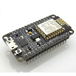
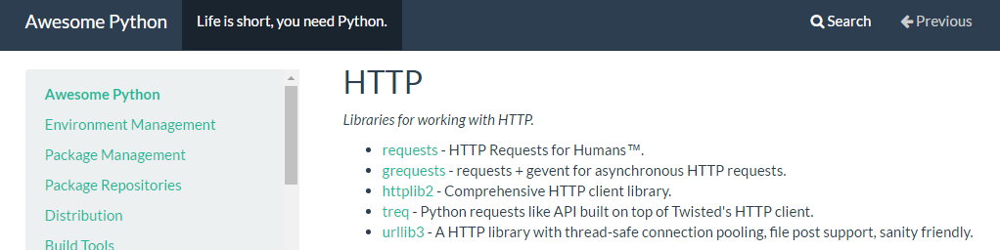

At the field of computer science, programming is more important than other area such networking, database and others. Technologies breakthrough always happen in business area and others is due to software technologies. For examples, combine programming and mathematical algorithms for making a program to predict the future. The introduction of programming concept is early than as we expected. In the following sections, I am going to describe the history of programming, the technologies and concept by comparing two popular programming language Java and Python.
When we talk about history of programming language, it is perfect to start with the work of “Augusta Ada King-Noel” who was popular with the name “Ada Lovelace”. She was mathematician from United Kingdom (Ada Lovelace May 2016). At the age of 27 in 1842, she wrote the algorithms in someone article as additional notes for making Bernoulli numbers calculation on the Analytical Engine that was invented by her business partner “Charles Babbage”. However, her accomplishment was not well known and became as history as that machine was not completely built by Charles. People said that her algorithms can be think of as the first type of programming language in Mathematical era.
In the next century, there are numerous innovation and discovery had been made including electricity and electronics and machines and devices these relies of them. Computer is one of great innovation in 20th century. At the early age of computing era, people have to write the instructions set and give it the computer to accomplish tasks. These instruction sets are different from one another as the design of computer’s hardware architecture is not the same. Additionally, it was not easy to understand these codes and spent a lot of time and energy to accomplish the task which is Pic -1 Photo of Lada took in 1840 very simple to do in single line of code in today software technologies. In the following section, I am going to present type of programming languages.
We can distinguish in two types. They are low and high level programming languages.
In the low level, the instruction given to computer is not obviously different from instruction set of a machine. It is also called as assembly language or machine code (Low-level programming language 22 April 2016). However, the efficiency and speed is higher than high level languages. It can also be separated into another two types. They are first and second generation languages. Machine code was part of first generation. Each and every instruction was represented by a stream of binary numbers. Programmer used switches at the front of computer to insert these instructions.
At second generation languages, the instruction are more close to English languages especially words. It used human-readable symbols to represent instruction sets. For example, “move
When it comes to high level programming, the instruction is represented with human understandable languages. Because, these are not only just words but also in sentence. For instance, the ‘print’ command is used to show text on the output unit on a computer (monitor) and ‘input’ is used for receiving data from input unit (keyboard) in Python programming language. There are many more popular languages in high level programming such as C, C++, BASIC, COBOL, FORTRAN, JAVA, Python, Pascal, VB and many others. There are different way of transforming human readable instruction to binary code that is used by the machine. These are called mode of execution.
There are three type of executing mode: interpreted mode, compiled mode and source to source translated or Trans-compiled mode. Each of them have different way of transforming instruction to low level.
At the compile mode, a special program is used to convert instructions written in high level into machine code which is specific to type of computing architecture before the program is ready to use on the computer. It is called compiler. The code is produced for a processing unit architecture is not possible to use in different architecture. Therefore, the instruction are need to compile again for using in different machine. Additionally, compilation take long time as the complexity, size and functionality of program is increased. In some language, there are another step involve between these two. Java is one of that kind of languages. It try to eliminate the way of compiling again and again to use in different machine. That kind of language involve another special program called “Virtual Machine”. Firstly, the compiler convert the code into stage or called ‘byte code’ in Java, which can run on the virtual machine (called JVM in Java). Then the VM convert into machine level instruction. Thanks to VM, the code can be used on different architecture after it has been compiled.
It also have special program as in previous mode which is called interpreter. It is very similar to compiler, used to convert into machine code. The different is that it convert each line of code immediately after it has read rather than reading the whole code and compiled. Sometimes, that type of programming language is called scripting language. Python is one of interpreted language. It have both pro and con when compared with compiled languages.
One of advantages is that a programmer can easily find the error as the compiler stop it compiling as soon as it found error in the code and shown to specific location. Which is different from compiled languages such as in Java that generate multiple error from the source of simple point.
However, interpreted language are usually slower than compiled languages when the code is running. It is because the process of converting to machine code happen on every time the code is running.
At this mode, the source code written in high level language is transformed into the source code of another high level language. Then used the compiler of translated language to convert into machine code. For example, Jython which convert the code written in Python code into Java then compiled to run it on JVM. By doing this, sometime the program is running at the speed of translated language which is faster than original language.
Before presenting the two popular high level programming, I would like to describe the terminologies these used in programming environment. These are SDK, API, Libraries. People usually debate about the difference between these terms.
Libraries are group of similar functions or methods or tasks. It hide the complexity of steps in order to get expected result. People usually give an example as “Don’t need to invent the wheel again”. A programmer can easily use the function written by another programmer to accomplish required tasks. In order to use these libraries, they need to use another technology which is called “API”.
It work as an interface between programmer and libraries. Sometimes, it is used to access the functionalities of another system. That can be seem in Web which is called web services or web API. Nowadays, people try to produce API to market their product. For example, Google Map API which can used to insert it functionality such as navigation and others into our own application.
It is the collection or bundles of tools that include compilers, libraries, API and others for modifying, configuring, fixing and improving a system. Programmer rely on that system to produce a program. However, these system are not always for producing application. By using SKD, the user do not need to know complexity in order to use that system to accomplish their task. For example, programmer use Android SDK for making an android application without need to know how the android system make communication with hardware such as CPU, memory, camera, sensors and others.
Additionally, SKD can be used to generate machine code for specific machine from a source code. For example, ESP8266 open SDK is used to generate firmware (machine code run on embedded devices) for giving access user to run Python (high level programming) program in microcontroller system.
Python is introduce by Guido van Rossum in the late of 1980s in Netherlands. It is five years prior to Java that was release to public in 1995. These two are working in different ways. However, they have one similarity which is that they support Object Oriented Programming model. Python have many interesting features than the other languages.
Firstly, Python is the kind of scripting language when Java as general purpose programming language. Python can not only be as script to ease daily computing tasks such as finding file, calculator, unit conversion tools, retrieving weather update from website by using standard libraries for specific operating system but also from produce web application to run on web server to working a long with data mining algorithms to predict the output based on the data that is given to. On the other hands, Java is used to produce high efficiency and enterprise level application.
Secondly, Python is designed to increase the speed or time of productivity of a program by making it syntax as simple as possible by comparing with other programming language. One of it features is remove curly braces which is used to separate codes in script in other languages. It use tap space instance of curly braces. Additionally, it make it syntax as close to English sentence rather than adding technical terms. For example, “print” is very simple to understand even for the people from other profession as compare with “System.out.print” in Java.
Additionally, one of the feature that can’t get in Java is that python support plug-and-play. In other words, the program still providing it function to user as the programming updating or making change to part of a program. The upgrading time is very short compared with Java which need to recompile it again in order to make affective the updating features. It make Python become popular among web programmer.
As I mansion before, Python can be used for creating various purpose application as the Java does. According to “Awesome Python” a website that collect the sources of various frameworks, module and APIs which are officially support by Python language. It has eighty title for different purpose area and each tittle has many sub modules and framework. For example, there are five modules under “HTTP” and these can be used to provide web functionally in application.
As Python, Java also support varieties of standards libraries and APIs. Java 7 which support 4240 classes.
Secondly, both language can be used to run on emended devices or microcontroller. Even though, they have more computing power than before, the performance is still lower when compared with general purpose computer or Single Board Computer (like Raspberry-pi, Beagle bone, Udoo, Chip and others). However, the language to run on these devices are not pure language. In other words, it is designed based on original language. For example, MicroPython which is designed to port light weight python language to microcontroller boards such as pyboard, nodeMCU and Adafruit’s Feather HUZZAH. Additionally, there is a device called IOIO(pronounced ‘yo-yo’) which can be driven by specialized version of Android SDK.
Finally, Python support some advanced module to accomplish task in clean and easy way. Such as rstrip( ) and lstrip( ).
There are other additional flavor of Python beside CPython. These try to increase the speed and duration of run time by try to convert the CPython code into other language’s byte code level on the fly and use their compiler to convert into machine code. It seem they run much faster than the program written in CPython. For example, Jython which is designed to eliminate the complexity of java syntax by using python syntax and run it on JVM. Additionally, it can directly use java’s native library as it base on JVM. Secondly, IronPython which is similar to Jython however it is designed to run on .NET Framework.
The downside of Python as compared with Java is that it is not fully support backward compatibility. The syntax is different in some part between Python version 2.x and 3.x. For example, the program will get error when “raw_input” is used to collect user input in version 3.x. It doesn’t happen in Java. Every single syntax is the same on every version of Java these have been updated.
In Java, programmer need to declare the type of variable before value is assigned to it. It doesn’t have to in Python. Most people said, it might confused to people who start learn programming or python as their programming language. However, I doesn’t agree with them. It doesn’t seem to problem as I know how to use type conversation effectively and it was also easy to understand in few minutes or after writing some simple program.
In this article, I have examine the history of programming languages, the concept that can see in programming area and compare two language as their similarities and differences based on the way of transforming source code into machine level, productivity, supporting functionalities and application areas and finally describe the way of manipulating the data type.
RECENT COMMENTS